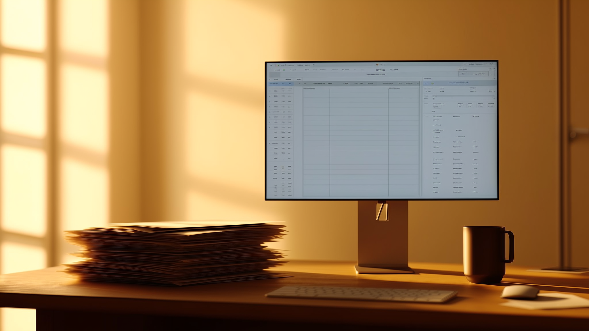

KMU Vertrieb automatisieren: Was wirklich funktioniert (und was nicht)

Die meisten Gespräche über Vertriebsautomatisierung starten mit der falschen Frage. Nicht "welches Tool", sondern "welches Problem genau". Und da wird es in vielen KMU-Büros schon unscharf.
Das eigentliche Problem: zu wenig Leads oder zu viele unbearbeitete?
Das sind zwei komplett unterschiedliche Baustellen. Ein Treuhandbüro mit 12 Mitarbeitenden hat oft gar kein Mengenproblem. Es liegen 800 Kontakte im CRM, die letztes Jahr mal Interesse zeigten. Niemand hat seither nachgefasst. Das ist der CRM-Friedhof: Kontakte vorhanden, Bearbeitung fehlt.
Ein Startup im Maschinenbau dagegen hat vielleicht ein echtes Akquiseproblem. Zu wenig neue Kontakte kommen überhaupt rein, das Netzwerk ist ausgeschöpft.
Beide Fälle brauchen unterschiedliche Lösungen. Wer nur alte Kontakte reaktivieren will, braucht Sequenzen und Timing. Wer neue Kontakte braucht, braucht zusätzlich Zielgruppendefinition und Listenaufbau. Automatisierung hilft bei beidem, aber nicht mit demselben Hebel. Bevor du irgendein System kaufst, kläre für dich: Liegt das Problem in der Menge oder in der Bearbeitung?
Was Vertriebsautomatisierung für ein KMU konkret bedeutet
Keine Marketing-Floskel, sondern drei sehr banale Dinge: Erstkontakt läuft automatisch an, Nachfassen passiert ohne dass jemand daran denken muss, und Termine landen direkt im Kalender des Vertrieblers. Das war's im Kern.
Bei Salesbrain heisst das konkret: Die Plattform übernimmt LinkedIn-Outreach und E-Mail-Sequenzen, reagiert auf Antworten, qualifiziert Interessenten und bucht Termine. Kein IT-Projekt, kein sechsmonatiges Rollout. Setup dauert 3-4 Wochen, dann läuft das System im Hintergrund weiter, auch am Wochenende.
Praxisbeispiel: vom CRM-Friedhof zu mehr Gesprächen
Ein Zürcher Anbieter für Gebäudetechnik, rund 20 Mitarbeitende, hatte genau das erste Problem: viele Altkontakte, kaum Zeit zum Nachfassen. Der Aussendienst führte vorher im Schnitt 2 qualifizierte Erstgespräche pro Woche, meist aus Zufallstreffern oder Empfehlungen.
Nach Einführung einer automatisierten Outreach-Sequenz auf Basis der bestehenden CRM-Kontakte stieg die Zahl innerhalb von sechs Wochen auf 5 Gespräche pro Woche. Nicht durch neue Kontakte, sondern durch systematisches Reaktivieren dessen, was schon da war. Der Inhaber hat dafür keinen zusätzlichen Mitarbeiter eingestellt, sondern die Sequenzen im Hintergrund laufen lassen und selbst nur die qualifizierten Termine wahrgenommen.
Warum Reaktionszeit über den Abschluss mitentscheidet
Hier wird oft mit Zahlen jongliert, die niemand nachprüfen kann. Was sich tatsächlich belegen lässt: Die Studie "The Short Life of Online Sales Leads" von James Oldroyd (Harvard Business Review, 2011, basierend auf Daten von MIT und InsideSales.com) zeigt, dass die Wahrscheinlichkeit, einen Lead zu qualifizieren, massiv sinkt, wenn die Erstkontaktierung länger als eine Stunde dauert, verglichen mit einer Reaktion innerhalb von fünf Minuten. Die genaue Grösse schwankt je nach Branche in den zitierten Folgestudien, aber die Richtung ist eindeutig und mehrfach reproduziert worden.
Für ein KMU heisst das praktisch: Wenn deine Anfrage über Nacht liegen bleibt oder der Verantwortliche gerade im Kundentermin ist, ist die Chance oft schon vertan, bevor jemand überhaupt reagiert hat. Ein automatisiertes System reagiert in Minuten, nicht in Tagen. Das ist der eigentliche Hebel, nicht die reine Kontaktmenge.
Datenschutz: was für Schweizer KMU konkret gilt
Seit dem 1. September 2023 ist das revidierte Datenschutzgesetz (revDSG) in Kraft. Für KMU im Vertrieb heisst das: Auskunftspflichten sind verschärft, Datenschutz-Folgenabschätzungen können bei sensiblen Bearbeitungen nötig werden, und wer Kontaktdaten grenzüberschreitend verarbeitet, zum Beispiel über eine Cloud-Plattform mit Servern im Ausland, muss die Übermittlung rechtlich absichern.
Bussen nach revDSG richten sich gegen die verantwortliche Person, nicht das Unternehmen als solches, und können bis zu CHF 250'000 betragen, etwa bei vorsätzlicher Verletzung der Informationspflichten oder bei Missachtung von Anordnungen des EDÖB. Für die Praxis bedeutet das: Ein Anbieter für automatisierten Vertrieb sollte Datenverarbeitung in der Schweiz oder mit klarer vertraglicher Absicherung anbieten, ein Verarbeitungsverzeichnis führen können und transparent machen, wo Kontaktdaten liegen. Bei Salesbrain läuft die Datenhaltung entsprechend den Schweizer Vorgaben, das ist Teil des Grundversprechens, nicht ein nachträglich aufgesetztes Feature.
Was Automatisierung nicht ersetzt
Ein System bucht Termine, aber es verkauft nicht das Produkt. Das bleibt Aufgabe der Vertriebsperson im Gespräch. Auch Preisverhandlung, Vertragsdetails und die persönliche Beziehung zum Kunden laufen weiterhin analog. Automatisierung übernimmt die Fleissarbeit davor: Kontaktaufnahme, Nachfassen, Terminfindung. Wer glaubt, damit den Vertriebler ganz ersetzen zu können, wird enttäuscht.
Kurz gesagt
Wer als Schweizer KMU den Vertrieb automatisieren will, sollte zuerst ehrlich klären, wo das Problem liegt: zu wenig Kontakte oder zu wenig Bearbeitung. Danach lohnt sich ein System, das in wenigen Wochen läuft, ohne IT-Projekt und ohne dass man laufend nachjustieren muss.
Salesbrain ist genau darauf ausgelegt: eine KI-gestützte Vertriebsplattform aus der Schweiz, entwickelt mit 20 Jahren Vertriebserfahrung im Rücken, aktiv innerhalb von 3-4 Wochen. Wenn du wissen willst, ob dein CRM-Friedhof oder deine Akquise das grössere Problem ist, buch dir ein unverbindliches Gespräch mit unserem Team. Wir schauen uns deinen Vertrieb konkret an, bevor wir irgendetwas empfehlen.